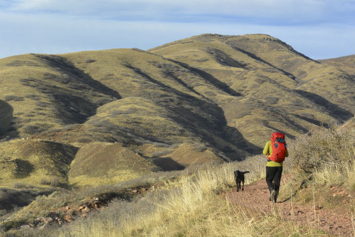

Hiking for Beginners
Hiking trail in Croatia
National park Risnjak
1. Start small and choose the right trail for your fitness level.
Select a hike a little shorter than the distance you can normally walk on a level or paved surface. To estimate the time required to hike the trail, figure a pace of roughly 2-miles per hour. Next, review the elevation changes and add an hour to your estimated hiking time for every 1000 feet of gain. After you’ve been out once or twice, you’ll have a sense for what distance and elevation changes work well for you.
2. Familiarize yourself with the trail.
Once you have selected a trail, obtain a map of the area and review reports and data. There are some excellent online resources available. Find out if the trail is a loop, or if you’ll have to backtrack or spot a second car. Take note of any intersecting trails where you could potentially make a wrong turn. I also like to look for a good lunch spot such as a lake or peak with a view.
3. Check the weather.
Leading up to your hike, and again a few hours before, check the weather. This will give you valuable information on how to dress and what to pack. If the weather is forecast to be awful, it will give you the chance to change plans instead of getting surprised on the trail.
Source: Hiking for beginners